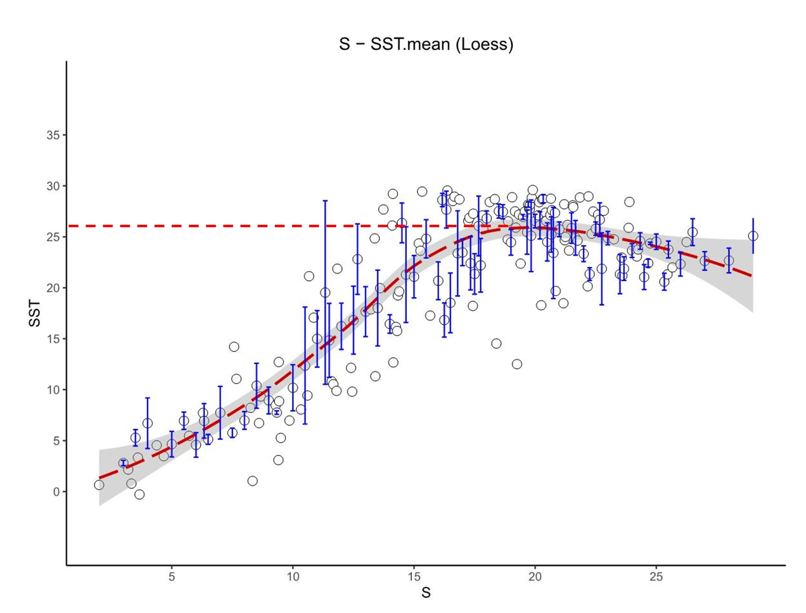

Igneous Rocks Classification
Database： Kaggle
Tool： Python
Description: This project utilizes Python-based machine learning models to classify igneous rocks according to their geochemical composition. The dataset, sourced from Kaggle, includes geographical locations and major oxide components.The workflow encompassed:
1. Data cleaning and preprocessing, including handling missing values and filtering under-represented rock classes;
2. Data standardization and train-test splitting;
3. Exploratory data analysis using PCA for dimensionality reduction and visualization;
4. Training and hyperparameter tuning of three machine learning models: K-Nearest Neighbors (KNN), Support Vector Machine (SVM), and Random Forest;
5. Model evaluation based on accuracy, confusion matrix, and classification report.
Sample Locations


PCA Visualization (2D and 3D)

Confusion Matrix for the RF Model Classification Results
Igneous Rocks Classification
Database： ForCenS
Tool： R
Description: This project investigated the latitudinal distribution of marine planktonic foraminifera diversity and its relationship with sea surface temperature (SST) using the ForCenS database—a comprehensive compilation of census counts from surface sediment samples.
Results: According to the ForCenS database, planktonic foraminifera species diversity exhibits a symmetric latitudinal gradient, with peaks observed at approximately 25°S and 30°N. Analysis of multi-year global mean sea surface temperature (SST) data reveals that these peak diversity latitudes correspond to an average SST of around 25°C. The findings suggest that temperature plays a critical role in shaping the latitudinal diversity gradient of planktonic foraminifera, independent of sediment sampling depth.
_1.jpg){kind=link}